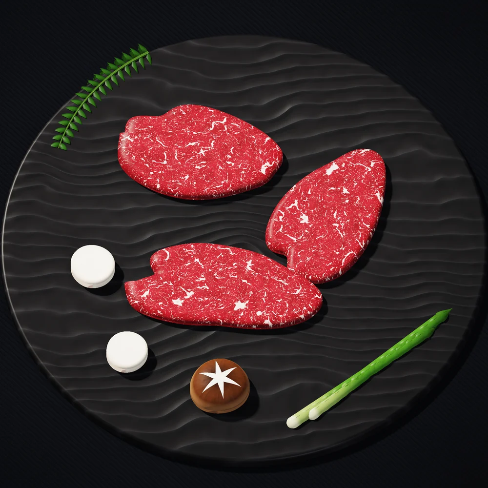
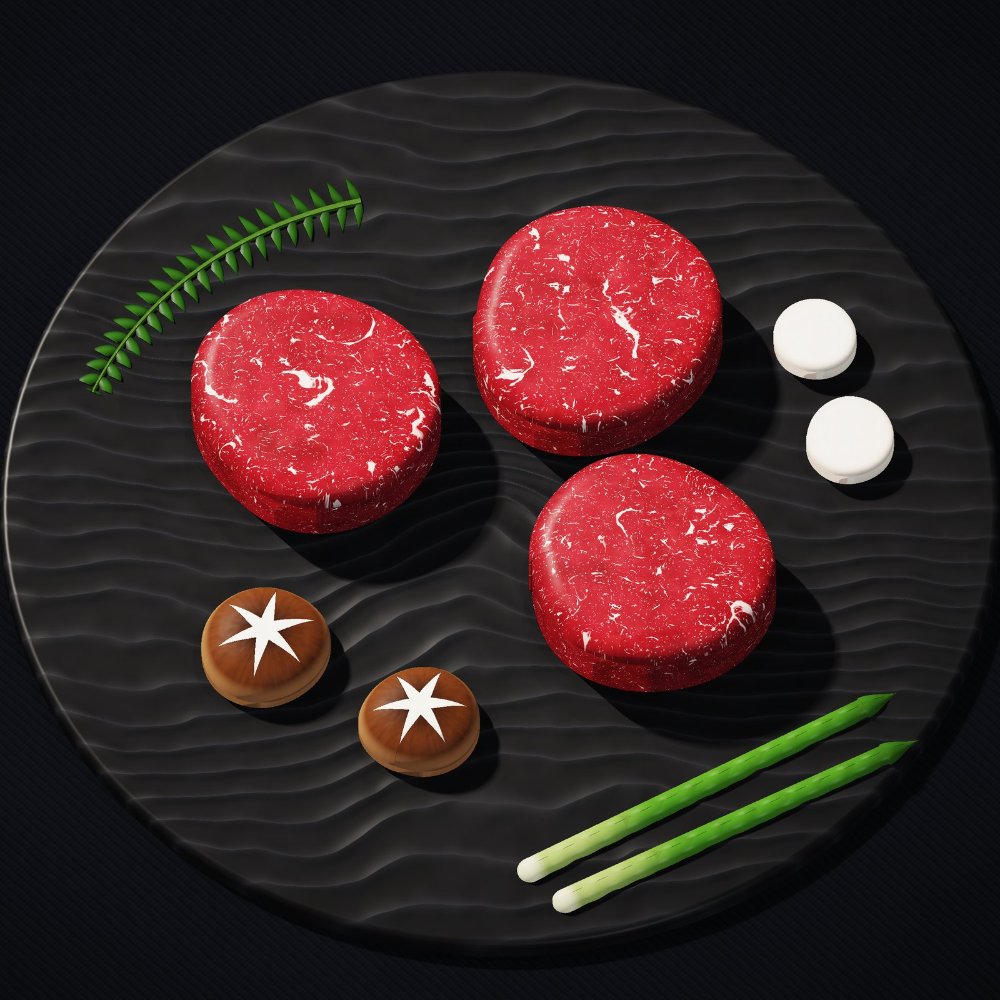

SIGNATURE SET
우참판 1++ No.9
안심 + 등심 150g. 우참판의 이름을 건 대표 구이.
55,000KRW
미쉐린 가이드 서울 2017 · 2018 · 2019 선정
서래마을의 1++ No.9 한우. 자염으로 간하고,
숙련된 직원이 가장 알맞게 구워 드립니다.
01 — 이름
참판(參判)은 조선 육조의 종2품 벼슬입니다. 우참판은 그 이름처럼 한우 한 점에도 품계를 매깁니다. 대표 메뉴 우참판과 특안심은 1++ 중에서도 가장 높은 근내지방도, No.9 한우로 준비하고, 갯벌의 바닷물을 끓여 얻은 자염으로 간을 합니다.
고기는 테이블에서 숙련된 직원이 알맞게 구워 드립니다. 손님은 대화에만 집중하시면 됩니다.
02 — 등급
근내지방도는 살코기 사이사이 박힌 지방의 정도를 1부터 9까지 나눈 기준입니다. 1++ 등급은 7부터 9까지, 그 가운데 가장 높은 단계가 No.9입니다.
HOVER / TAP — 단계를 비교해 보세요

03 — 한 접시
물결무늬 석판 위에 두툼하게 썬 특안심을 올리고, 별 모양 칼집을 낸 표고버섯과 새송이, 아스파라거스를 곁들입니다. 굽기 전부터 이미 한 상의 풍경이 됩니다.
* CG로 재현한 플레이팅 이미지입니다. 실제 구성은 메뉴에 따라 달라집니다.
04 — 간
자염은 갯벌의 바닷물을 오랫동안 끓여 얻는 전통 소금입니다. 우참판은 이 소금 한 꼬집으로 한우 본연의 단맛을 끌어올립니다.
05 — 불
달군 불판 위에 특안심을 올립니다.
그릴 자국이 선명해질 때까지 한 번에.
속은 촉촉한 로즈빛, 가장 맛있는 순간에 잘라 드립니다.
07 — 공간
와인 · 블루 · 옐로우 · 밸리 · 클라우드
그린 · 골드 · 화이트
포레스트 · 파인 · 레드
스카이 · 가든
룸 차지 없음 · 룸은 변경될 수 있습니다 · 룸에서는 ‘우참판’ 메뉴 주문이 어렵습니다(주말·공휴일 제외)
발렛만 가능 · 런치 3,000원 / 디너 4,000원
와인 1병 무료, 2병부터 병당 10,000원 · 양주 1병 20,000원
온라인 예약 최대 40명 · 대관 문의 가능
유아의자 준비 · 대기공간 · 무선인터넷
08 — 오시는 길
| 평일 | 11:30 – 22:00 | 브레이크 14:30–17:00 · 라스트오더 21:00 |
|---|---|---|
| 주말 | 11:30 – 21:30 | 브레이크 15:00–17:00 · 라스트오더 20:30 |
09 — 쇼릴
모든 장면은 코드로 만들었습니다. 하이트필드 레이마칭 CG로 재현한 플레이팅, GLSL 마블링과 불꽃, 캔버스 키네틱 타이포그래피, 가야금처럼 튕기는 Karplus–Strong 사운드까지.
실시간 렌더 엔진으로 보기 → 같은 장면을 브라우저에서 실시간으로 그립니다